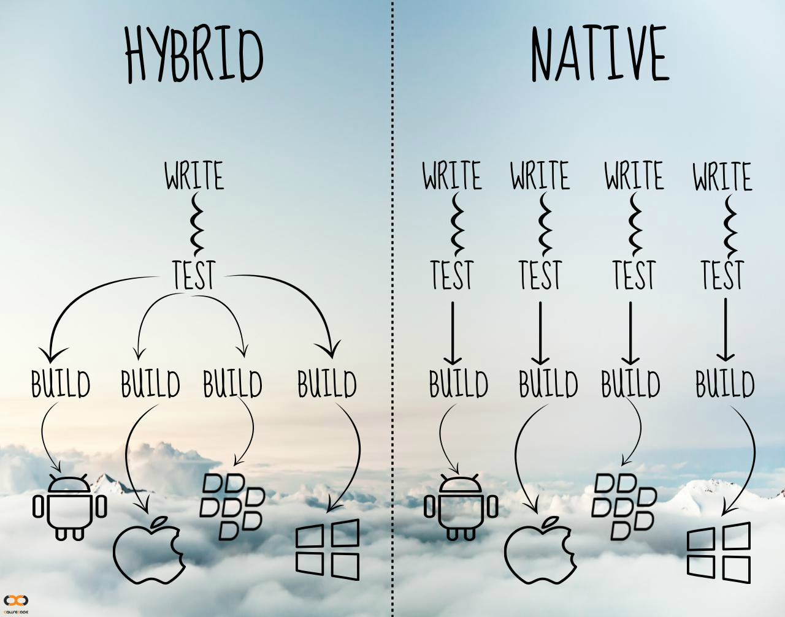

3 Common Misconceptions About Hybrid Apps
It is a great time to be developing using hybrid app technology especially now. Launch faster, run leaner, grow your development team faster pick hybrid!

Hybrid apps interact with your mobile operating systems indirectly. Read more about, what is a hybrid app?
Many people just assume native apps are better because of the terminology used. But before you actually pick one over the other for your startup or product. Let's look at what a hybrid app brings to the table.
Proponents of native apps state the following advantages:
- Device specific features like apps GPS, camera etc
- Performance
- Better user experience
Device specific features
There are hundreds of plugins available, many of which expose or give access to device specific hardware or features. But even if you needed to use a feature that isn't. You couldn't simply write a plugin yourself or collaborate with someone to get that feature. Here are a few key device-specific plug-ins out there:
- Cordova Core Plugins. There is support for everything from Battery Status, Camera, Console, File API, Geolocation, Statusbar and more.
- PhoneGap Push Notifications Plugin
- Custom URL scheme Cordova/PhoneGap Plugin
Performance
Gone are the days where you had to rely on slow CSS and JavaScript animations that were just not good enough, with so many JS libraries out there that manipulate the view using what Dom CSS transformations are to achieve 60+ FPS
If you crave for that native kick for certain computations, you can always write parts of your app natively. But native animation speed can no longer be held against hybrid tech.
Better User Experience
Some say people are used to native UI elements. With frameworks like OnsenUI providing component library that look and feel native you don't have to worry about the User Experience.
But why is taking the hybrid route better for most organizations?
1. One team
If you use JavaScript/Typescript and other web technologies for both web and mobile app via hybrid tech, the development costs can be brought down drastically. The key advantage is scaling the team, it becomes easier because as a team you don't have to train and on board people on 3 or 4 different technologies. This in many cases can be the difference between building an app in house vs. outsourcing things.
Essentially allowing you to maintain one team for multiple platforms and the web.
2. Launch faster and service your customers better
With a major part of the codebase being the same for iOS, Android, Windows and Web applications will allow you to fix bugs faster. Have a much better automated test coverage. Lessons learned from one app will be applied to the other versions in many cases without any additional work.
3. Access to talent
A lot of hybrid technology is built around JavaScript. It is much easier to find JavaScript developers than a Swift developer or an Android developer. Finding good developers is hard in general. Imagine if you were to build a team of great engineers in Swift/Objective-C, Java and JavaScript just for mobile development as a startup or an organization trying to run lean.
It is a great time to be developing using hybrid app technology especially now. Launch faster, run leaner, grow your development team faster pick hybrid!
Would love to hear your experiences native or hybrid.